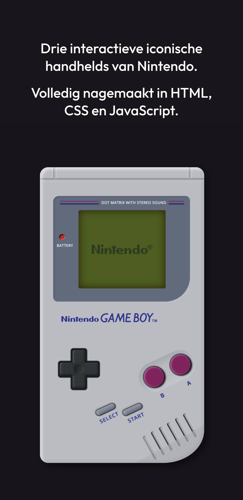
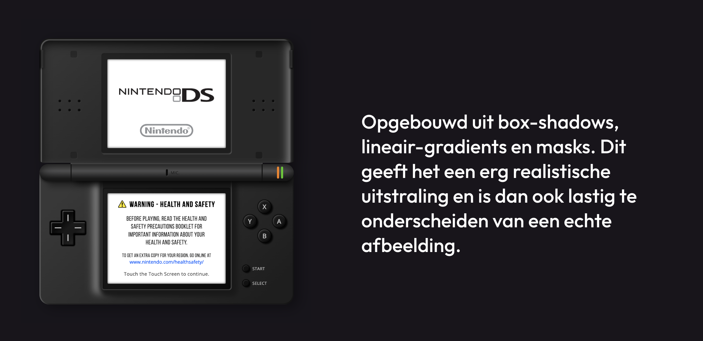
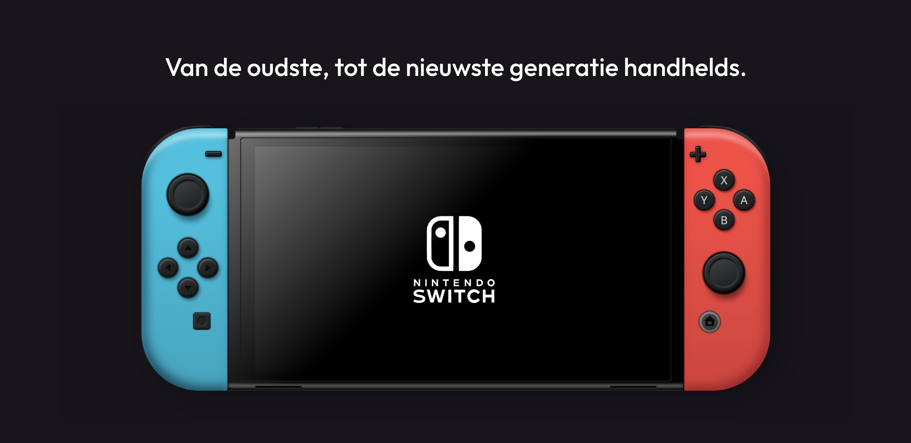

Nintendo
Een visuele en interactieve tijdlijn van verschillende Nintendo handhelds door de jaren heen, volledig nagemaakt in code.
De uitwerking is specifiek gemaakt voor een groter schermformaat, zoals een laptop of desktop. Op een ander apparaat kunnen er mogelijke (visuele) problemen ontstaan.Ik heb verschillende generaties Nintendo handhelds uitgebeeld door ze na te maken in HTML, CSS en JavaScript. Mijn doel was om deze zo écht mogelijk te laten lijken, terwijl het eigenlijk alleen maar gestijlde HTML elementen zijn. Deze uitdaging zorgde ervoor dat ik meer begrip kreeg over complexe box-shadows en gradients in CSS.
Uiteindelijk heb ik drie generatie handhelds gemaakt. Bestaande uit de GameBoy, DS Lite en de Switch. Elk apparaat heeft een behoorlijk verschillende vorm vergeleken met de andere apparaten en dat maakt het uitdagend en leuk om telkens het best mogelijke resultaat neer te zetten.
Interacteren met deze handhelds is ook mogelijk. Door te klikken op "start" of "home", wordt er een overlay getoond in de stijl van besturingssysteem van het apparaat. In deze overlay is het mogelijk om over te schakelen naar een andere handheld, door in te zoomen in het scherm. Je waant je als het ware in de desbetreffende interface.
Als kers op de taart heb ik voor elk apparaat het originele startscherm nagemaakt met bijhorende audio effecten, dit zorgt ervoor dat de handheld nóg meer tot leven komt.
- 
- 
- 
- 